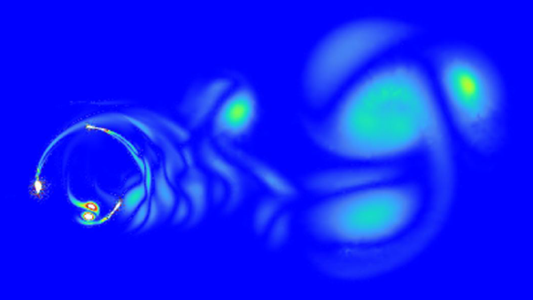

Cities today spend up to 40% of their electricity budget on street lighting. To reduce both cost and carbon emissions, this project integrates a small vertical-axis wind turbine into each lamp post. The goal: at least 200 kWh/year per turbine within a compact spatial envelope, ensuring manufacturability, structural integrity, and rapid ROI.
As global energy demand rises, the shift from fossil fuels to renewable sources is critical. Urban areas, with their high energy consumption and turbulent wind conditions, present a unique challenge. Vertical-axis wind turbines (VAWTs) offer a promising solution due to their ability to capture wind from any direction, making them well-suited for semi-urban environments where traditional grid-powered street lighting is both costly and carbon-intensive.
A MATLAB framework was developed to explore numerous geometries before CFD simulations:
Effective Wind Moment: The Weibull distribution was chosen for its proven effectiveness in wind energy studies. It accurately captures the variability of wind speeds across different locations, reflecting the probabilistic nature of wind patterns. This makes it ideal for estimating annual energy production by accounting for the frequency and distribution of wind speeds at the turbine's installation site, enhancing the reliability of the predictive models.
Annual Energy Estimate:
Cp–TSR Approximation:
Constants \(a, b, c\) are tuned from literature, and \(\mathrm{WidthFactor}\) relates to turbine solidity, enabling rapid sweeps of chord, radius, and solidity.
Top candidates were analysed using ANSYS Fluent 2D transient simulations to capture the dynamic behaviour of the turbine:
Domain & Mesh: The computational domain was a 20R circular region to minimise boundary effects, featuring a hybrid mesh with approximately 500,000 cells. This ensured high resolution near the blades, where flow gradients are steepest. An inflation layer was applied with a first-layer height calculated to maintain \(y^+ < 1\), critical for resolving boundary layer effects accurately.
Mesh Independence: Tests with 230k, 500k, and 800k cells confirmed that beyond 500k cells, Cp variations were less than 5%, balancing accuracy and computational cost.
Solver Settings: The k-ω SST turbulence model was employed for its superior performance in modelling flow separation and vortex shedding — key phenomena in VAWT aerodynamics. A second-order upwind scheme was used for momentum discretisation, and residuals were set to 10⁻⁶ to ensure convergence within 40 iterations per time step.
Time Stepping:
Data Extraction: Simulations ran for 10 revolutions, discarding the first 5 to eliminate transients, then averaging torque to generate Cp–TSR curves.
The CFD model was validated by comparing simulated Cp–TSR curves with experimental data from Castelli et al. For a turbine with a solidity of 0.2, the simulations achieved a peak \(C_p = 0.4\) at TSR ≈ 2.6, aligning within 10% of the reference values, confirming the model's predictive capability. A slight shift was observed in the Cp–TSR curve, however, which is accounted for and is commonly seen in other CFD experiments due to the inherent uncertainty in 2D simulations.
Beyond numerical validation, the physical accuracy was assessed through wake profiles and vortex shedding patterns. The simulations captured the formation of vortex structures behind the blades, consistent with the unsteady aerodynamics expected in VAWTs. These wake characteristics, observed after convergence, matched theoretical expectations, reinforcing the reliability of the computational approach.
MATLAB predictions and CFD results achieved energy forecasts within 10% of simulated outcomes.
Geometry sweeps completed in minutes; each CFD simulation took ~10 CPU hours.
Prototype costs are £650/unit, reducing to £400/unit in bulk, with a ~10-year payback at £0.34/kWh.
CO₂ savings estimated at 62.5 kg per turbine annually, or 62.5 t for 1,000 units.
CFD Outcomes: Simulations showed that higher solidity (σ = 0.4) turbines excelled at lower TSRs (1.5–2.5), ideal for urban wind speeds of 3–4 m/s, enhancing self-starting ability. Conversely, lower solidity (σ = 0.2) favoured higher TSRs with increased peak Cp. The NACA0018 airfoil outperformed NACA0015, yielding a peak \(C_p = 0.4\) versus 0.38, due to its higher lift-to-drag ratio at operating angles of attack.
To confirm the turbine could be safely integrated onto an existing streetlight, a structural finite element analysis was performed on the lamp post under the aerodynamic loading predicted by the CFD study.
A representative 180 N lateral force was applied at the turbine mounting height to simulate peak wind loading. The analysis quantified stress concentrations and total deformation along the pole, confirming that stresses remained within acceptable limits for the proposed mounting configuration.
This structural check complemented the aerodynamic work by ensuring the chosen turbine size and mounting position were mechanically viable, not just aerodynamically efficient.
The integrated approach - MATLAB modelling, CFD validation, structural FEA, and cost analysis — delivers optimised VAWTs for semi-urban settings.
Future work includes 3D CFD, field testing with helical and straight-blade designs, and lifecycle assessments.